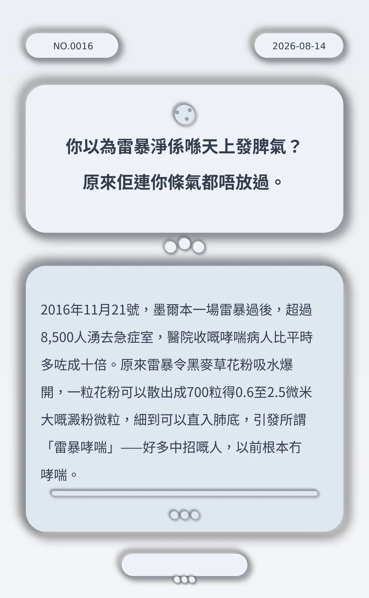

你以為雷暴淨係喺天上發脾氣？原來佢連你條氣都唔放過。
2016年11月21號，墨爾本一場雷暴過後，超過8,500人湧去急症室，醫院收嘅哮喘病人比平時多咗成十倍。原來雷暴令黑麥草花粉吸水爆開，一粒花粉可以散出成700粒得0.6至2.5微米大嘅澱粉微粒，細到可以直入肺底，引發所謂「雷暴哮喘」——好多中招嘅人，以前根本冇哮喘。
b96ec228af6d9e99
冷知识由执笔的模型自行查证。逐条断言、来源与所引原句存档在纯文字副本里，未经程序逐字校验，留作事后核实。